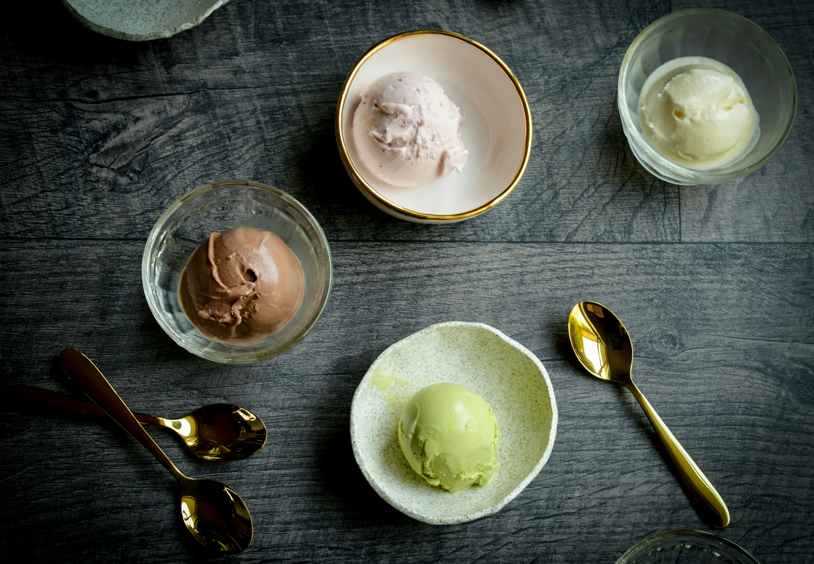

Use the upper SCOOPABLE MAX FILL limit. The lower FREEZE FILL marking is for drinkable recipes. Never top up just to reach a line.
FOOD / THE RECIPE COLLECTION
From first bite
to last scoop.
Recipes from my kitchen. Entrées, comforting mains, and something sweet to finish.
Browse the recipes
01 / TO BEGIN
Entrées
Small plates and first bites.
No recipes added yet02 / THE MAIN EVENT
Mains
The meals worth sitting down for.
No recipes added yet03 / SOMETHING SWEET
Desserts20
Classic treats and lighter favourites.
Classic desserts
DESSERTS / HEALTHY VERSIONS
Lighter scoops, more variety.
Recipes with fewer calories than our rich cream-based ice creams, made for creamy texture and plenty of flavour. These are starting recipes to try: expect a lighter richness, with results that depend on your protein powder.
Protein favourites
FRUIT, VEG, NUTS & SEEDS
Eight more colourful scoops
Measured portions of produce, nuts and seeds paired with the vanilla whey base. Each recipe includes all listed toppings in its nutrition estimate.
What these ingredients can—and cannot—do for skin
Vitamin C is needed for normal collagen production. Eating varied foods can help meet nutrient needs, but these recipes have not been shown to tighten skin, reverse ageing or prevent UV damage. Food does not replace sun protection.
We use nuts and seeds in small portions to manage calories. Brazil nuts are not included as a routine topping because their selenium content is unusually high and variable. Some ingredients from the inspiration list, including broccoli, Brussels sprouts and tomatoes, are better suited to future savoury recipes.
Calories and protein are estimates per ½ batch. “Healthy versions” describes this recipe collection, not a guarantee that a food suits every dietary need.
BEFORE YOUR FIRST SCOOP
A little prep.
A better batch.
Cover and freeze upright on a level shelf for at least 24 hours. Blend ingredients separately before freezing.
Start with a flat, fully frozen base straight from the freezer. A routine 20-minute bench thaw can make your dessert too soft.
Flatten leftovers, cover and freeze promptly. If hard later, use the original program again. If scoopable, simply enjoy.